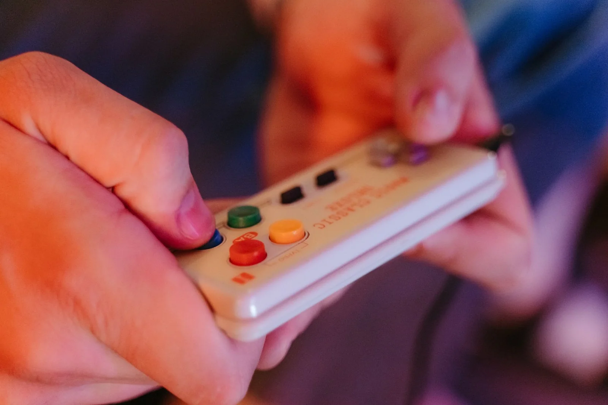

Nintendo: Mario, Zelda y Pokémon
Super Mario redefine el ritmo y las ideas de plataformas con cada generación, desde niveles compactos hasta mundos abiertos. The Legend of Zelda mantiene la curiosidad y los puzles como parte esencial de su aventura, aunque cambia la estructura. Pokémon combina colección, combate y comunidad en un formato reconocible con criaturas nuevas. La continuidad está en la promesa central, no en repetir exactamente la misma fórmula.
Acción y mundos de larga duración
Grand Theft Auto cambia de ciudad y sátira para construir mundos abiertos con personajes y actividades. Resident Evil alterna horror de supervivencia, acción y remakes, adaptando el equilibrio al momento. Final Fantasy renueva escenarios y sistemas de combate en vez de continuar una única trama, lo que permite entrar por distintas entregas. Las franquicias prosperan cuando explican qué se mantiene y qué empieza de cero.

Competición y juego social
Mario Kart convierte objetos, circuitos y partidas locales en una fórmula inmediata. Street Fighter conserva el enfrentamiento uno contra uno mientras revisa sistemas de entrada y entrenamiento. Minecraft ofrece un conjunto de herramientas que la comunidad convierte en aventuras propias. Estas sagas se benefician de que el juego social y la creatividad siguen funcionando aunque el hardware cambie.
Evolución frente a nostalgia
La nostalgia trae jugadores de vuelta, pero no sostiene una entrega por sí sola. Una remasterización debe ofrecer una versión clara y estable; una secuela necesita justificar qué añade. Cambios de accesibilidad, guardado y controles pueden ayudar a que una saga envejezca bien. Mira reseñas recientes y requisitos, no solo recuerdos de una entrega que quizá tenga décadas de diferencia.
Cómo elegir una saga larga
Busca una puerta de entrada independiente o revisa el orden recomendado por el editor. Algunas franquicias usan universos compartidos y otras solo conservan temas. Comprueba si un remake reemplaza a una edición original o adapta sus sistemas. No hace falta terminar todas las entregas para disfrutar una nueva. Empieza por género, tono y disponibilidad de la plataforma que ya tienes.
En resumen
Las sagas perduran cuando equilibran reconocimiento y renovación. Elige una entrega que funcione como puerta de entrada y explora después la historia de la franquicia a tu ritmo.
Preguntas frecuentes
¿Qué saga de videojuegos es la más longeva?
Depende de si se cuentan series, spin-offs o versiones; cada franquicia tiene fechas y formatos distintos.
¿Hay que jugar en orden?
A veces sí para seguir una historia; otras entregas son independientes.
¿Un remake sustituye al original?
No necesariamente. Puede cambiar controles, arte, narrativa o contenido.
¿Cómo se eligieron estas sagas?
Por identidad, evolución y variedad de entregas, no por ventas acumuladas.
Fuentes y lecturas
Consulta la fuente original cuando exista y su fecha; los anuncios, el catálogo y las guías de terceros pueden cambiar.